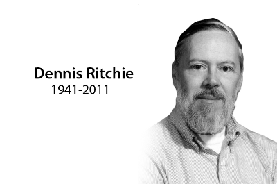

Dr. Dennis Ritchie
The man who invented C

Dennis MacAlistair Ritchie was born September 9,1941.He is father of C.
Here is time line of Dennis Ritchie:
- Dennis Ritchie was born on September 9,1941 in New York.
- His father was Alistair E. Ritchie, a longtime Bell Labs scientist.
- Ritchie is best known as the creator of the C programming language, a key developer of the Unix operating system, and co-author of the book The C Programming Language; he was the 'R' in KAndR (a common reference to the book's authors Kernighan and Ritchie).
- In 1983, Ritchie and Thompson received the Turing Award for their development of generic operating systems theory and specifically for the implementation of the UNIX operating system.
- Ritchie was under the radar. His name was not a household name at all, but... if you had a microscope and could look in a computer, you'd see his work everywhere inside.